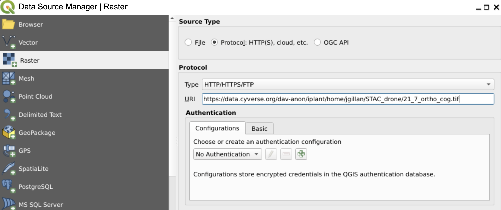

Cloud Optimized GeoTiff
Background¶
The TIFF file format (Tagged Image File Format) is an old format dating back to 1992. TIFF are great for high-resolution verbatim raster images. TIFF are still used a bit in high-end photography, but where it has really grown a second life is in digital cartography. The variation called GeoTIFF has been widely adopted as a way to share satellite images and other satellite data.
While the GeoTIFF file format has long been thought of as only suitable for raw data: if you wanted to display it on a map, you’d convert it into tiles. If you wanted a static image, you’d render it into a PNG or JPEG. But Cloud-Optimized GeoTIFF means that GeoTIFFs can be a bit more accessible than they used to be.
Cloud Optimized GeoTIFF (COG)¶
A Cloud Optimized GeoTIFF (COG) is a regular GeoTIFF file, aimed at being hosted on a HTTP file server, with an internal organization that enables more efficient workflows on the cloud. In other words, we can stream the content of a GeoTIFF file from a server into a client application without having to download the full file.
COGs have three major features that are baked into the file:
Tiling¶
Tiles are small, regular, and independent parts of a larger map. They are typically 256x256 pixels in size. COGs have tiles explicitly specified in their format structure, whereas regular GeoTIFFs may not. Tiling is a way to speed up map display because only the tiles that are visible in the current view need to be loaded.
Overviews¶
Overviews are downsampled thumbnail images of the tile. A COG will have many overviews matched to each Zoom Level.

HTTP(s) GET Range Request¶
The HTTP GET Range Request, also known as Byte Serving, allows a client to request specific chunks of the COG using a combination of the tiles and overviews. If you are zoomed into a specific portion of the COG, then you only request the tiles that are visible in the current view. This is the same technology that enables streaming of other media types like video and audio.
Check out the COG Specification
Example COGs on the internet¶
There are numerous cloud based data stores hosting COGs, take a look through a few of these:
-
Microsoft Planetary Computer Catalog - most of the imagery datasets in Planetary Computer are hosted as COGs. You can also view the catalog through the Planetary Computer STAC API browser
-
Planet is streaming out their imagery as COGs. You can also do simple analysis of COGs directly within the Planet platform.
-
This example COG is a drone orthomosaic that is hosted in Cyverse Data Store. We can stream it to the CogEO Viewer.
-
Here is another example of drone imagery COG from OpenAerialMap. The data is hosted on AWS and streamed to the CogEO Viewer.
Applications that can use COGs¶
COGs are geotiffs, so any software application that can read and work with geotiffs will be able to read and work with COGs. This includes QGIS, ArcGIS, and Google Earth Engine.
Stream COGs into QGIS
-
Open QGIS
-
In the "Layers" then "Add Layer" and then "Add Raster Layer"
-
Choose the Source Type and select "Protocol: HTTP(s), cloud, etc" for a file on your computer
-
Enter a valid
https://in theURlfield for a COG you found online

-
You can stream COGs into ArcGIS Pro following this tutorial.
Creating Your Own COGs¶
Using GDAL¶
Geospatial Data Abstration Library (GDAL) is an open source library for working with geospatial data.Most GIS software use GDAL. For regular users, GDAL is a command line tool.
The lastest versions of GDAL (>v3.1) have COG generator installed by default.
Install GDAL
GDAL installation can at times be difficult. When different older python environments are installed on a desktop or laptop GDAL can become broken or incompatiblity issues can come up when installing it.
USGS Windows GDAL Installation Guide
QGIS installs GDAL by default
Anaconda and its package management conda
Docker osgeo/gdal images are maintained on the Docker Hub
Open a console and check your gdal installation
gdalinfo --version
Make sure that you're operating on at least v3.1 of GDAL (current latest v3.5.1)
gdal_translate p_ndvi_cor.tif p_ndvi_cor_cog.tif \
-b 1 -b 2 -b 3 \
-of COG \
-co TILING_SCHEME=GoogleMapsCompatible \
-co COMPRESS=JPEG \
-co OVERVIEW_QUALITY=100 \
-co QUALITY=100
Check the file size of your example file and your output file. Which is larger?
Now, if we want to add overviews to the output p_ndvi_cor_cog.tif:
gdaladdo \
--config COMPRESS_OVERVIEW JPEG \
--config JPEG_QUALITY_OVERVIEW 100 \
--config PHOTOMETRIC_OVERVIEW YCBCR \
--config INTERLEAVE_OVERVIEW PIXEL \
-r average \
p_ndvi_cor_cog.tif \
2 4 8 16
Using Cogger¶
coggeris a rapid COG generator from GeoTIFF
Using Python¶
library Rio-cogeo - RasterIO plugin to create and validate COGs
If I have COGs, do I still need a tile server?¶
The breakthrough of COGs is that they have internal tiling which allows them to be streamed into applications without the need for an additional tile server. For most individuals and small organizations, this should be all you need.
However, there are a few reasons why you might still want to use a tile server with COGs:
-
Performance: Tile servers can cache tiles in memory, which can improve performance by reducing the number of times that tiles need to be read from disk.
-
Scalability: Tile servers can be scaled to handle large numbers of requests.
-
Security: Tile servers can be used to encrypt tiles, which can help to protect them from unauthorized access. If you are streaming COGs to a large number of clients or if you need to ensure that your tiles are secure, then I recommend using a tile server. However, if you are only streaming COGs to a small number of clients and you do not need to worry about security, then you can use the built-in tiles in COGs.
How are COGs different from XYZ and WMTS tiles?¶
Web mapping tile services (WMTS) and XYZ tiles are primarily designed for efficient map display in web environments. Their main goal is to provide quick and seamless map visualizations over the internet by serving small, pre-defined tiles at multiple zoom levels. These tiles are ideal for web maps where users might pan and zoom around the globe, as the small tiles can be fetched and displayed rapidly.
However, for analysis purposes – where users might want to compute statistics, apply algorithms, or extract detailed information from imagery or raster data – these tiling methods are not optimal. The reason is that analysis often requires access to raw, high-resolution data rather than the downsampled or potentially lossy representations provided by these tiles.
That's where formats like Cloud Optimized GeoTIFFs (COGs) come into play. COGs are designed to allow for efficient access to high-resolution raster datasets, making them more suited for analytical purposes. With COGs, one can access and process only specific portions of a large raster without downloading the entire file, making it efficient for cloud-based analysis workflows.
In summary, COGs are designed for efficient access to high-resolution raster data, while XYZ and WMTS tiles are designed for efficient map display.
Resources¶
COGS in Production blog post by Sean Rennie